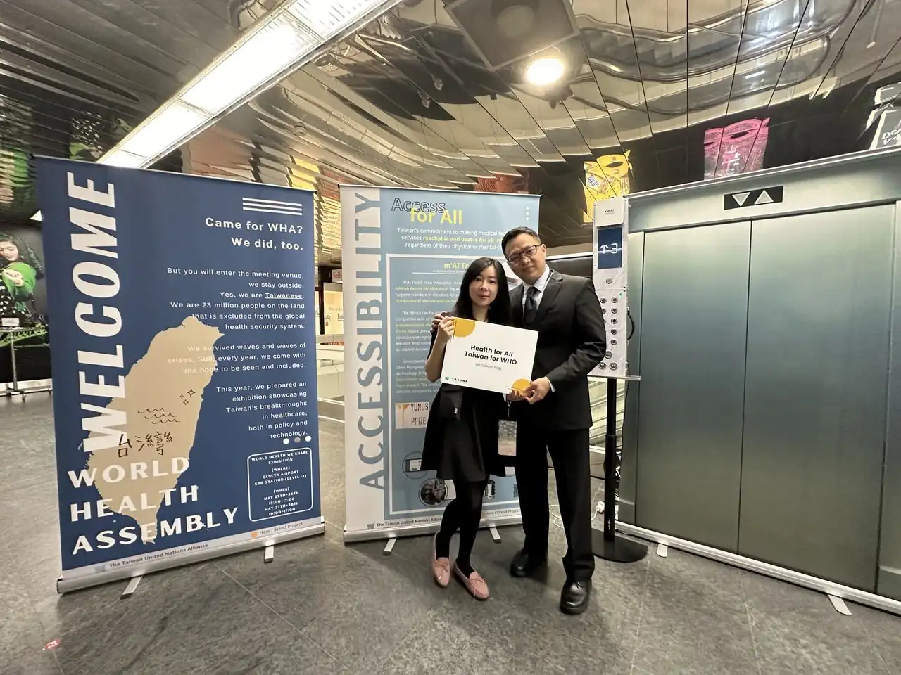

新聞發布 | 2024.06.05
m'AI Touch非接觸式AI技術 台灣創新助力全球公共衛生
在日內瓦舉行的「World Health We Share」特展中，台灣聯合國協進會WHO宣達團於5月25日至28日，在日內瓦國際機場車站展示了台灣在健保、醫療技術及國際醫療領域的卓越成果。m'AI Touch（邁啟科技）作為本次特展唯一受邀的企業，展現了台灣在全球領先的AI導向非接觸科技，彰顯了我們在公共衛生技術創新上的貢獻。
COMPUTEX 2024匯集了眾多科技巨頭，共同展望AI創新的未來，而m'AI Touch的「非接觸式AI外掛裝置」作為全球首創的零接觸AI電梯解決方案，近日受邀參與2024 WHO宣達團的特展。這一技術通過多種感測器結合AI演算法的雙重保障，有效解決了市場上電梯非接觸式按鈕的技術難題，並杜絕了由公共面板帶來的病毒傳播風險，為建立電梯公共衛生的新標準奠定了基礎。
邁啟科技的非接觸式AI技術融合了光學檢測與AI演算法，致力於開發並應用於日常生活中常用的電梯設備。此技術支持任何品牌的電梯，安裝外掛裝置後，只需隔空一指即可選擇樓層，提供一個簡便且有效的公共防疫與衛生解決方案。在「World Health We Share」特展上，該技術的展示直接展現了降低傳染病風險的公共衛生設計理念。
邁啟科技創辦人、麻省理工電機資訊博士陳鴻文表示：「m'AI Touch的技術將防止病毒傳播的解決方案無痛融入日常生活。使用者無需改變原有操作習慣，即可享受高穩定性且精準的電梯使用體驗。與需要大量人力進行清潔的傳統方法相比，m'AI Touch不僅能有效防止病毒傳播，還能顯著減少資源浪費，並提升公共衛生水平。此AI非接觸式裝置適用於各種電梯，無需更換原有面板，安裝時間可縮短至3小時內，極大降低了重新裝修的時間與成本。即使電梯設有門禁系統，也不會受到外掛裝置的影響。此外，未來系統還可升級遠端VIP叫車功能，使服務型機器人能夠升級搭乘電梯，進一步降低市場上的建置成本。」